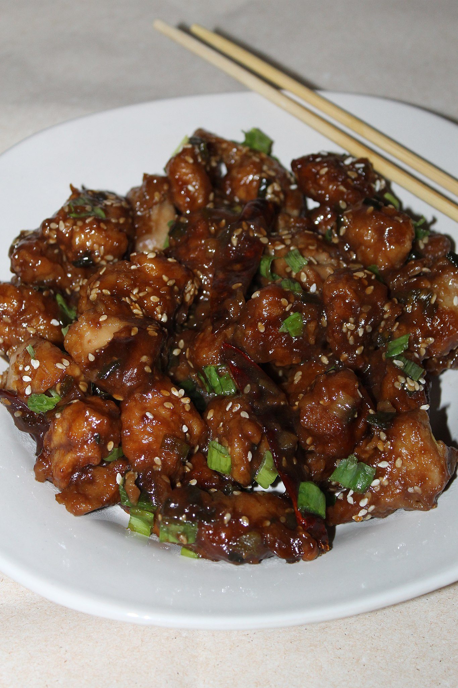

Honey Glazed Chicken
Back to Home Page

Description
This honey chicken dish is easy to make with just 5 ingredients.
Delicious served on steamed rice and garnished with sliced green onions.
Ingredients
- 1/4 cup honey
- 2 tablespoons soy sauce
- 1/8 teaspoon red pepper flakes
- 1 1/2 tablespoons olive oil
- 2 skinless, boneless chicken breast halves, cut into bite-size pieces
Steps
- Gather all ingredients.
- Whisk honey, soy sauce, and red pepper flakes in a bowl; set aside
- Heat olive oil in a skillet over medium heat; cook and stir chicken
in hot oil until lightly brown, about 5 minutes.
- Pour honey mixture into the skillet; continue to cook and stir until
chicken is no longer pink in the center and sauce is thickened,
about 5 minutes more.
- Serve hot and enjoy!